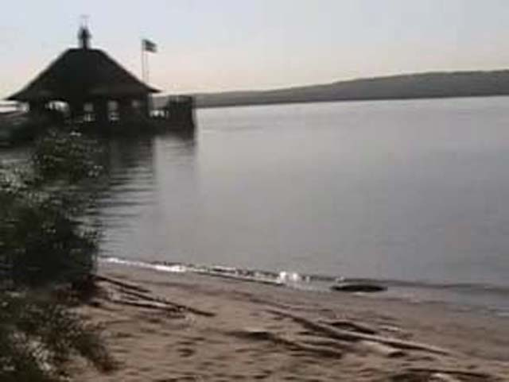
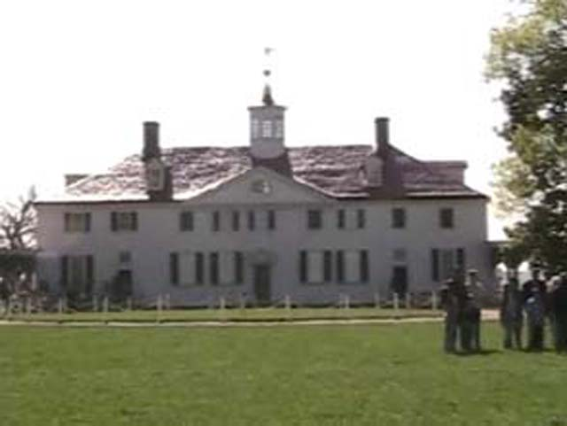

DC/Williamsberg/Knotts Photo TRs
Day 3
DC
It was good to saty at the Radisson and get some brochures of SFA, BGE and Hershypark. We'd be
staying in DC for the whole day. We first went up to Mt. Vernon and saw where George Washington lived.
It was pretty and unique. The 16 sided barn was cool. Mt. Vernon would be a nice place to live.
We then went to the Library of Congress. It had a European style to it. We then went to the Holocrast Museum. It was mostly about World War II, Adof Shitler and what was
going on then. We then went to see a play called Sheer Madness. It was funny. Onto todays few
photos

This is the veiw you get from Mt. Vernon

I want to live here!
 How long have we been out of California!
How long have we been out of California!
Day 4
Home